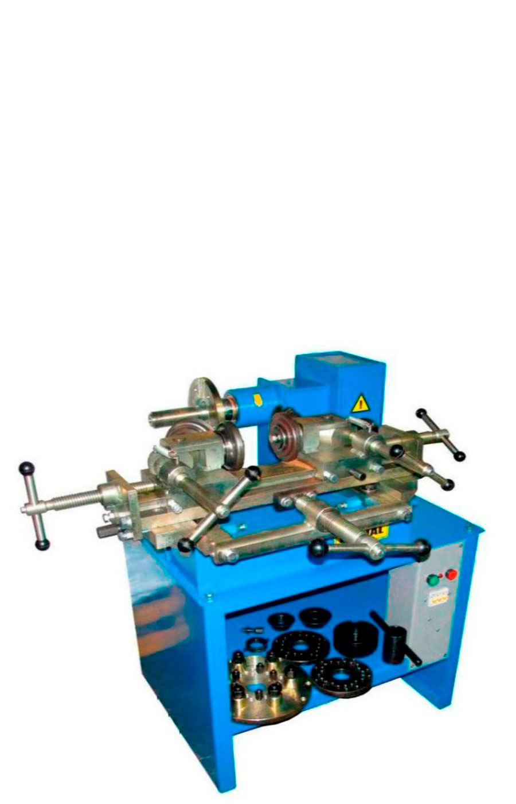
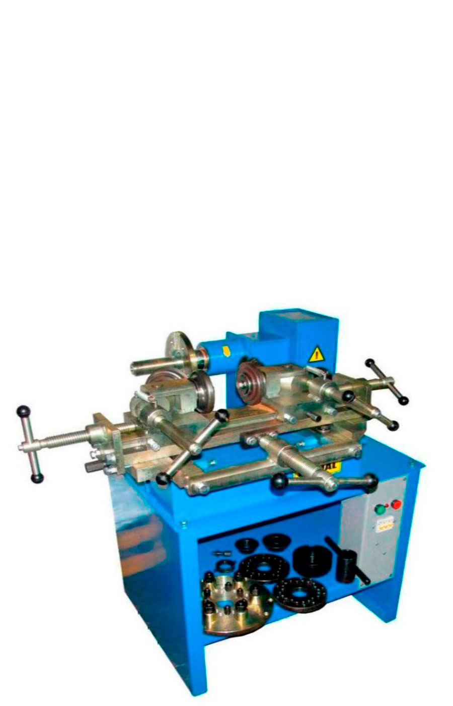

О шиномонтаже "У Леонидовича"
Наше оборудование
 

Балансировочный станок M&B WB 255N
Шиномонтажный станок M&B TC 322, полуавтоматический
Станок для рихтовки дисков RADIAL M
Компьютерный стенд балансировки колес, определяющий величину и положение дисбаланса колеса во время одного вращения. Нажатием на отдельные кнопки управления лекго выбрать разные программы стенда.
На этом станке можно бортировать покрышки разных типов. Особенно стойкая конструкция станка выдерживает большие ударные нагрузки, возникающие при бортировке широких и низкопрофильных покрышек.
Этот станок позволяет устранить эллипсность, радиальное и осевое биение диска автомобильного колеса, восстановить профиль посадочных мест под установку шины, местные повреждения.
Персонал

Геннадий Леонидович
Главный шиномонтажник, владелец, царь и бог нашего шиномонтажа :)
Часы работы
Пн-Пт: 8:00-18:00
Сб: 8:00-16:00
Вс: выходной
Связаться с нами
Бердянск, Запорожская область, Украина, 71100
+38 (066) 632 44 80